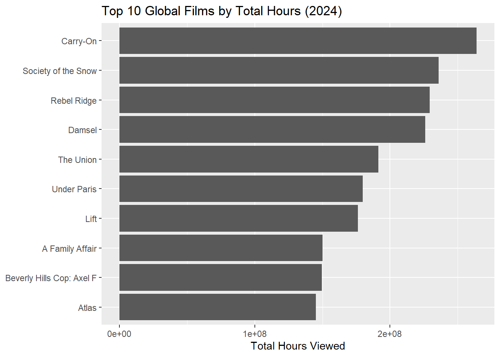

Code
# =========================
# Setup & Data
# =========================
# Packages
if (!require("tidyverse")) install.packages("tidyverse", quiet = TRUE)
if (!require("DT")) install.packages("DT", quiet = TRUE)
if (!require("lubridate")) install.packages("lubridate", quiet = TRUE)
if (!require("scales")) install.packages("scales", quiet = TRUE)
library(readr); library(dplyr); library(stringr)
library(tidyr); library(lubridate); library(ggplot2)
library(DT); library(scales)
# Data folder and file paths
if (!dir.exists(file.path("data", "mp01"))) {
dir.create(file.path("data", "mp01"), showWarnings = FALSE, recursive = TRUE)
}
GLOBAL_TOP_10_FILENAME <- file.path("data", "mp01", "global_top10_alltime.tsv")
COUNTRY_TOP_10_FILENAME <- file.path("data", "mp01", "country_top10_alltime.tsv")
# Download if missing
if (!file.exists(GLOBAL_TOP_10_FILENAME)) {
download.file(
"https://www.netflix.com/tudum/top10/data/all-weeks-global.tsv",
destfile = GLOBAL_TOP_10_FILENAME, mode = "wb"
)
}
if (!file.exists(COUNTRY_TOP_10_FILENAME)) {
download.file(
"https://www.netflix.com/tudum/top10/data/all-weeks-countries.tsv",
destfile = COUNTRY_TOP_10_FILENAME, mode = "wb"
)
}
# Import
GLOBAL_TOP_10 <- read_tsv(GLOBAL_TOP_10_FILENAME, show_col_types = FALSE)
COUNTRY_TOP_10 <- read_tsv(COUNTRY_TOP_10_FILENAME, na = "N/A", show_col_types = FALSE)
# Clean
GLOBAL_TOP_10 <- GLOBAL_TOP_10 |>
mutate(season_title = if_else(season_title == "N/A", NA_character_, season_title))
# Helper to prettify column titles for tables
format_titles <- function(df){
colnames(df) <- colnames(df) |> str_replace_all("_", " ") |> str_to_title()
df
}
# Quick preview (datatable)
GLOBAL_TOP_10 |>
head(20) |>
format_titles() |>
datatable(options = list(searching = FALSE, info = FALSE)) |>
formatRound(c("Weekly Hours Viewed","Weekly Views"))Code
# =========================
# Task 4: Exploratory Data Analysis
# =========================
# Q1. How many countries (by viewing history proxy)?
cat("\n# Q1. Number of countries:\n")
# Q1. Number of countries:Code
q1_count <- n_distinct(COUNTRY_TOP_10$country_name)
print(q1_count)[1] 94Code
# Q2. Non-English film with the most cumulative weeks in global Top 10
cat("\n# Q2. Non-English film with most cumulative weeks in global Top 10:\n")
# Q2. Non-English film with most cumulative weeks in global Top 10:Code
q2_tbl <- GLOBAL_TOP_10 |>
filter(category == "Films (Non-English)") |>
arrange(desc(cumulative_weeks_in_top_10)) |>
slice(1) |>
select(show_title, cumulative_weeks_in_top_10) |>
format_titles()
datatable(q2_tbl, options = list(searching = FALSE, info = FALSE))Code
# Q3. Longest film (minutes) to appear in the global Top 10
cat("\n# Q3. Longest film (minutes) in global Top 10:\n")
# Q3. Longest film (minutes) in global Top 10:Code
q3_tbl <- GLOBAL_TOP_10 |>
mutate(runtime_minutes = round(60 * runtime)) |>
arrange(desc(runtime_minutes)) |>
slice(1) |>
select(show_title, runtime_minutes) |>
format_titles()
datatable(q3_tbl, options = list(searching = FALSE, info = FALSE))Code
# Q4. Per category: program with most total global hours
cat("\n# Q4. Per category: program with most total global hours:\n")
# Q4. Per category: program with most total global hours:Code
q4_tbl <- GLOBAL_TOP_10 |>
group_by(category, show_title) |>
summarise(total_hours = sum(weekly_hours_viewed, na.rm = TRUE), .groups = "drop") |>
slice_max(order_by = total_hours, n = 1, by = category) |>
arrange(category) |>
format_titles()
datatable(q4_tbl, options = list(searching = FALSE, info = FALSE)) |>
formatRound("Total Hours")Code
# Q5. TV show with the longest consecutive Top-10 run in one country
cat("\n# Q5. Longest consecutive Top-10 TV run in one country:\n")
# Q5. Longest consecutive Top-10 TV run in one country:Code
longest_streak <- COUNTRY_TOP_10 |>
filter(grepl("^TV", category)) |>
arrange(country_name, show_title, week) |>
group_by(country_name, show_title) |>
mutate(
is_consec = week - lag(week) == 7,
is_consec = replace_na(is_consec, FALSE),
streak_id = cumsum(!is_consec)
) |>
group_by(country_name, show_title, streak_id) |>
summarise(
streak_weeks = n(),
start_week = min(week),
end_week = max(week),
.groups = "drop"
) |>
arrange(desc(streak_weeks)) |>
slice(1) |>
format_titles()
datatable(longest_streak, options = list(searching = FALSE, info = FALSE))Code
# Q6. The one country with < 200 weeks of history and its last recorded week
cat("\n# Q6. Country with < 200 weeks of history and its last recorded week:\n")
# Q6. Country with < 200 weeks of history and its last recorded week:Code
weeks_by_country <- COUNTRY_TOP_10 |>
summarise(n_weeks = n_distinct(week), .by = country_name) |>
arrange(n_weeks)
exception_country <- weeks_by_country |> slice(1) |> pull(country_name)
last_week_exception <- COUNTRY_TOP_10 |>
filter(country_name == exception_country) |>
summarise(last_week = max(week)) |>
pull(last_week)
q6_tbl <- tibble(
country = exception_country,
n_weeks = weeks_by_country$n_weeks[1],
last_week = last_week_exception
) |> format_titles()
datatable(q6_tbl, options = list(searching = FALSE, info = FALSE))Code
# Q7. Total hours watched for Squid Game (all seasons)
cat("\n# Q7. Total hours watched for Squid Game (all seasons):\n")
# Q7. Total hours watched for Squid Game (all seasons):Code
q7_hours <- GLOBAL_TOP_10 |>
filter(str_detect(show_title, regex("^Squid Game", ignore_case = TRUE))) |>
summarise(total_hours = sum(weekly_hours_viewed, na.rm = TRUE)) |>
pull(total_hours)
cat(comma(q7_hours), "\n")5,310,000,000 Code
# Q8. Estimated 2021 views for Red Notice (runtime 1h58m)
cat("\n# Q8. Estimated 2021 views for Red Notice (runtime 1h58m):\n")
# Q8. Estimated 2021 views for Red Notice (runtime 1h58m):Code
red_2021_hours <- GLOBAL_TOP_10 |>
filter(show_title == "Red Notice", year(week) == 2021) |>
summarise(total_hours = sum(weekly_hours_viewed, na.rm = TRUE)) |>
pull(total_hours)
red_runtime_hours <- 1 + 58/60
red_2021_views <- red_2021_hours / red_runtime_hours
q8_tbl <- tibble(
`2021_hours` = comma(red_2021_hours),
`est_views` = comma(round(red_2021_views))
) |> format_titles()
datatable(q8_tbl, options = list(searching = FALSE, info = FALSE))Code
# Q9. Films that hit #1 in the U.S. but didn’t debut at #1; most-recent example
cat("\n# Q9. Films that climbed to #1 in U.S.; most-recent example:\n")
# Q9. Films that climbed to #1 in U.S.; most-recent example:Code
us_films <- COUNTRY_TOP_10 |>
filter(country_name == "United States", grepl("^Films", category)) |>
arrange(show_title, week)
us_stats <- us_films |>
group_by(show_title) |>
summarise(
debut_week = min(week),
debut_rank = weekly_rank[which.min(week)],
ever_no1 = any(weekly_rank == 1),
last_no1_week = if (any(weekly_rank == 1)) max(week[weekly_rank == 1]) else as.Date(NA),
.groups = "drop"
)
count_upgraders <- sum(us_stats$ever_no1 & us_stats$debut_rank > 1, na.rm = TRUE)
q9_count_tbl <- tibble(`Films that climbed to #1` = count_upgraders) |> format_titles()
datatable(q9_count_tbl, options = list(searching = FALSE, info = FALSE))Code
most_recent_upgrader <- us_stats |>
filter(ever_no1, debut_rank > 1) |>
arrange(desc(last_no1_week)) |>
slice(1) |>
select(show_title, debut_rank, last_no1_week) |>
format_titles()
datatable(most_recent_upgrader, options = list(searching = FALSE, info = FALSE))Code
# Q10. TV show/season that hit Top-10 in the most countries on debut week
cat("\n# Q10. TV show/season with widest country coverage on debut week:\n")
# Q10. TV show/season with widest country coverage on debut week:Code
tv_debuts <- COUNTRY_TOP_10 |>
filter(grepl("^TV", category)) |>
group_by(show_title, season_title) |>
summarise(debut_week = min(week), .groups = "drop")
tv_coverage <- COUNTRY_TOP_10 |>
inner_join(tv_debuts, by = c("show_title","season_title")) |>
filter(week == debut_week) |>
group_by(show_title, season_title, debut_week) |>
summarise(countries = n_distinct(country_name), .groups = "drop") |>
arrange(desc(countries)) |>
slice(1) |>
format_titles()
datatable(tv_coverage, options = list(searching = FALSE, info = FALSE))Code
# =========================
# Extra Credit + Press Releases
# =========================
# Extra Credit: Chart
cat("\n# Extra Credit: Chart (Top 10 Global Films by Total Hours last full year)\n")
# Extra Credit: Chart (Top 10 Global Films by Total Hours last full year)Code
most_recent_full_year <- max(year(GLOBAL_TOP_10$week), na.rm = TRUE) - 1
top10_films_recent_year <- GLOBAL_TOP_10 |>
filter(grepl("^Films", category), year(week) == most_recent_full_year) |>
group_by(show_title) |>
summarise(total_hours = sum(weekly_hours_viewed, na.rm = TRUE), .groups = "drop") |>
slice_max(total_hours, n = 10) |>
arrange(total_hours)
print(
ggplot(top10_films_recent_year, aes(x = total_hours, y = reorder(show_title, total_hours))) +
geom_col() +
labs(
title = paste0("Top 10 Global Films by Total Hours (", most_recent_full_year, ")"),
x = "Total Hours Viewed", y = NULL
)
)
Code
# Press Release 1: Stranger Things
cat("\n# Press Release 1: Stranger Things\n")
# Press Release 1: Stranger ThingsCode
st_stats <- GLOBAL_TOP_10 |>
filter(grepl("^TV", category), str_detect(show_title, "^Stranger Things")) |>
summarise(
total_hours = sum(weekly_hours_viewed, na.rm = TRUE),
total_weeks = n(), .groups = "drop"
)
st_total_hours <- st_stats$total_hours
st_total_weeks <- st_stats$total_weeks
cat(
"Stranger Things, for four seasons, have", comma(st_total_hours),
"total hours viewed. Globally, Stranger Things held a top 10 position for",
st_total_weeks, "weeks. Stranger Things is one of the top English TV hits in both total hours and run length.\n"
)Stranger Things, for four seasons, have 2,967,980,000 total hours viewed. Globally, Stranger Things held a top 10 position for 50 weeks. Stranger Things is one of the top English TV hits in both total hours and run length.Code
# Press Release 2: India-focused titles (weeks, not hours)
cat("\n# Press Release 2: India-focused titles\n")
# Press Release 2: India-focused titlesCode
india_weeks <- COUNTRY_TOP_10 |>
filter(country_name == "India") |>
group_by(show_title, category) |>
summarise(weeks_in_india = n_distinct(week), .groups = "drop") |>
left_join(
COUNTRY_TOP_10 |>
filter(country_name == "United States") |>
distinct(show_title) |>
mutate(charted_us = TRUE),
by = "show_title"
) |>
filter(is.na(charted_us)) |>
arrange(desc(weeks_in_india)) |>
slice_head(n = 3)
india_leads <- paste0(india_weeks$show_title, collapse = ", ")
india_weeks_top3 <- sum(india_weeks$weeks_in_india, na.rm = TRUE)
cat(
"Hindi Netflix shows are booming. Notably", india_leads,
"logged a combined", india_weeks_top3,
"chart-weeks in India while never charting in the USA.\n"
)Hindi Netflix shows are booming. Notably The Great Indian Kapil Show, The Railway Men - The Untold Story Of Bhopal 1984, Khakee: The Bihar Chapter logged a combined 104 chart-weeks in India while never charting in the USA.Code
# Press Release 3: Open Topic
cat("\n# Press Release 3: Open Topic\n")
# Press Release 3: Open TopicCode
total_hours_recent_year <- sum(top10_films_recent_year$total_hours)
top3_titles <- paste0(rev(top10_films_recent_year$show_title)[1:3], collapse = ", ")
cat(
"Global Films Keep Winning — In", most_recent_full_year,
"the global top 10 films amassed", comma(total_hours_recent_year),
"hours viewed. Top shows included", top3_titles,
"each lasting weeks across regions.\n"
)Global Films Keep Winning — In 2024 the global top 10 films amassed 1,948,000,000 hours viewed. Top shows included Carry-On, Society of the Snow, Rebel Ridge each lasting weeks across regions.